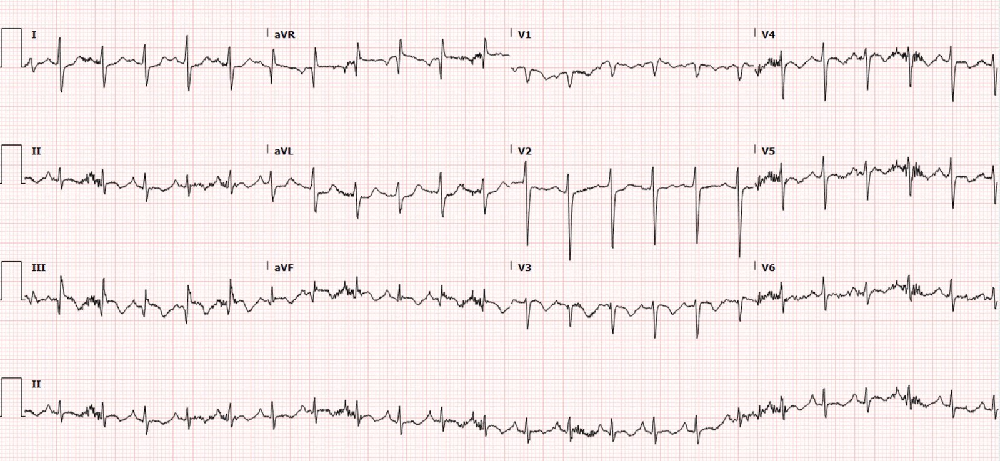
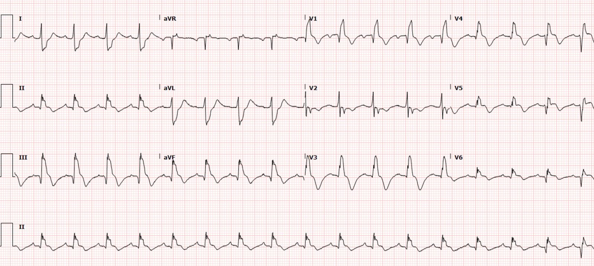
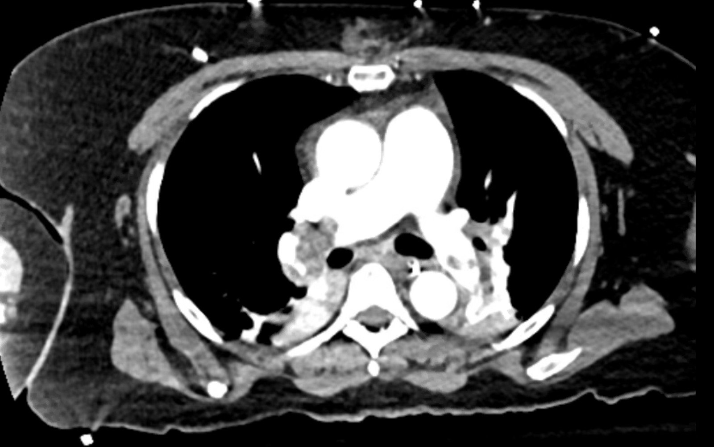
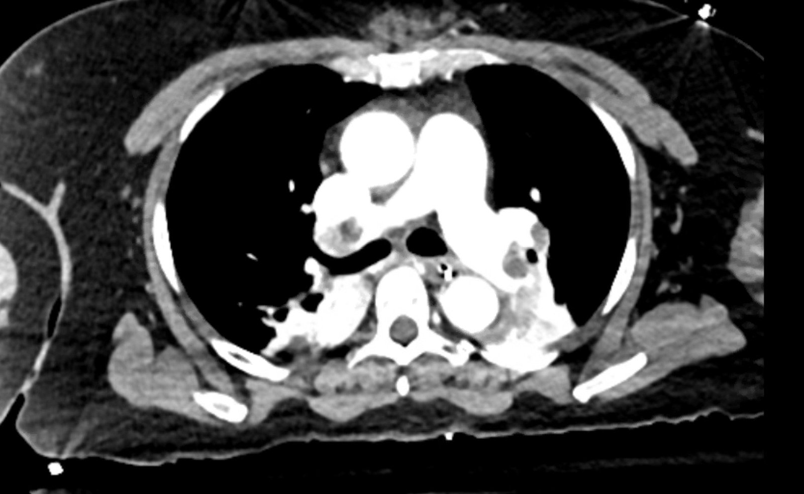
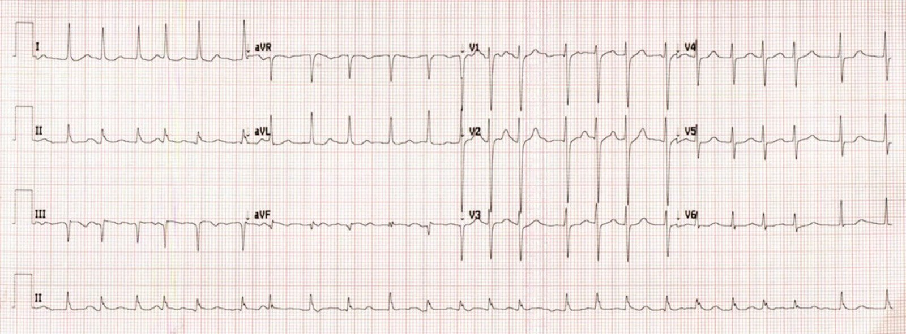
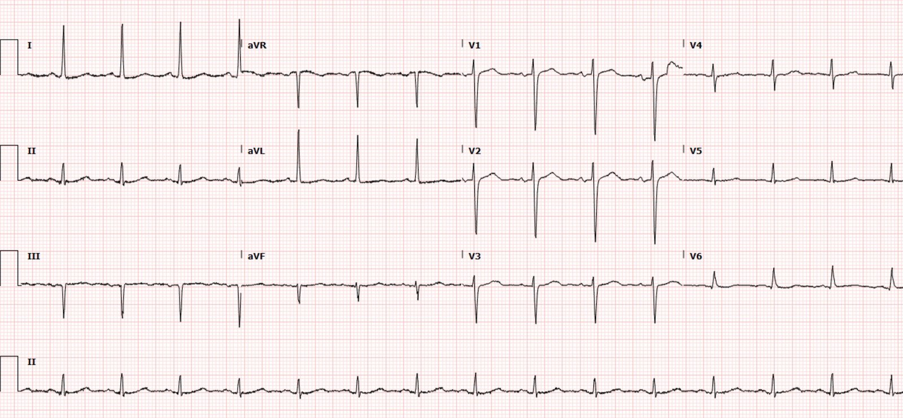
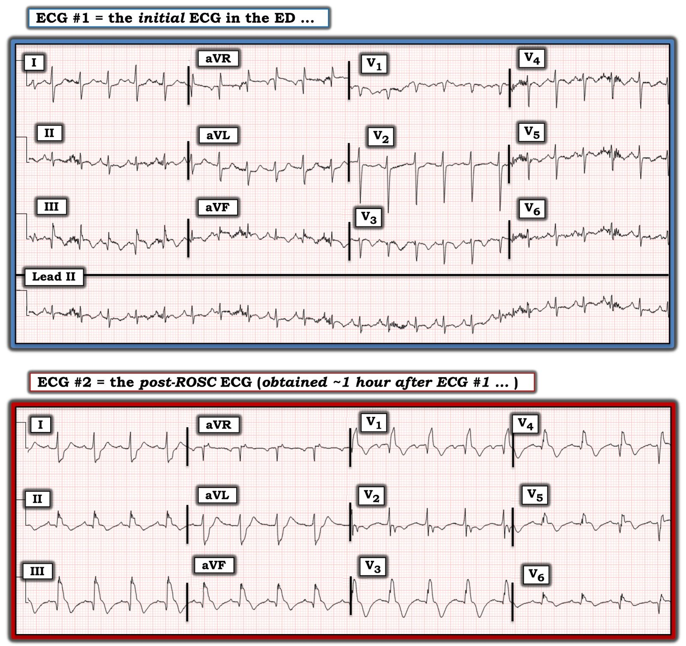
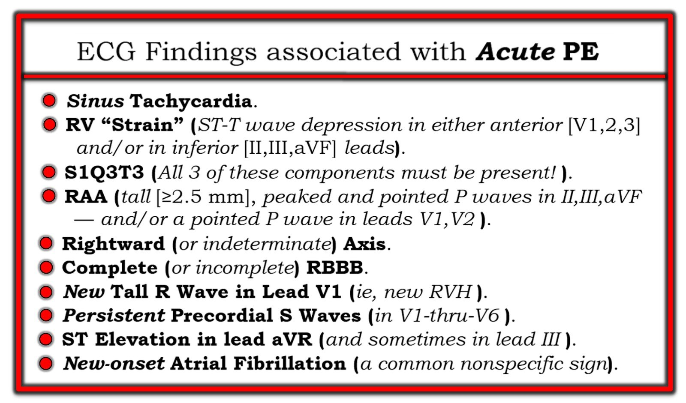
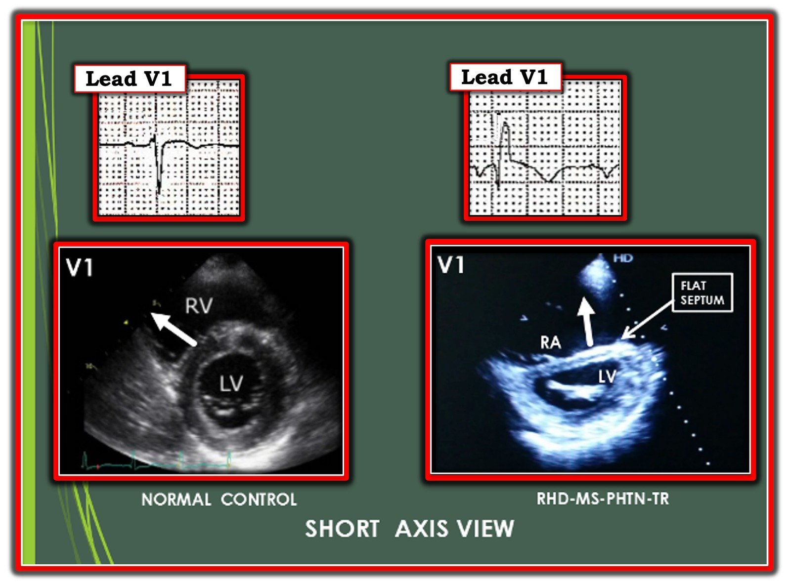

28/03/2022 — Một phụ nữ 50 mấy tuổi bị khó thở
Bản dịch tiếng Việt của bài "A woman in her 50s with shortness of breath" – Dr. Smith’s ECG Blog. Giữ nguyên toàn bộ 10 hình ảnh và 1 video của bản gốc.
Ca bệnh do Neha Ray, MD viết, được Meyers, Smith, Grauer biên tập
Một phụ nữ 50 mấy tuổi đến khám vì nhiều cơn ngất
kèm khó thở. Khi đội cấp cứu ngoài viện (EMS) đến, bà có GCS 15, nhịp tim (HR)
110 mấy. Trên đường đến khoa cấp cứu (ED), bệnh nhân bị thêm 4 cơn ngất nữa và trở nên
mất ổn định huyết động với huyết áp tâm thu (SBP) 80 mấy và HR 160 mấy. SpO2 ghi nhận đầu tiên là 73%. Khi đến ED,
bệnh nhân vã mồ hôi và trong tình trạng nguy kịch. Điện tâm đồ ban đầu của bà ở dưới đây. Nhân viên cấp cứu ngoài viện đến ED và cho biết họ lo ngại STEMI thành dưới.
Bạn thấy
gì?


Bạn nghĩ gì?
Điện tâm đồ cho thấy nhịp nhanh xoang với sóng T đảo ngược rõ
ở các chuyển đạo thành dưới và thành trước. Bệnh nhân cũng có trục lệch phải, và
hình ảnh S1Q3T3. Có thoáng gợi ý ST chênh lên (STE) không phù hợp ở III, kèm ST chênh xuống (STD) soi gương ở I và aVL.
Rất dễ nhầm điện tâm đồ này là OMI thành dưới (STE ở III kèm STD soi gương ở aVL). Nhưng có vài đặc điểm cho thấy đây là một hình ảnh giả OMI và thay vào đó gần như chẩn đoán được tăng gánh tim phải. Quan trọng nhất là nhịp nhanh, vốn luôn phải khiến bạn nghi ngờ chẩn đoán OMI. Khi có nhịp nhanh, thì hoặc là OMI kèm sốc tim (khi đó siêu âm tim phải thấy chức năng thất trái (LV) kém hoặc rối loạn chức năng van), hoặc là có một nguyên nhân khác. Sóng T: 1) khi đảo ngược ở cả chuyển đạo thành trước lẫn thành dưới, PE có khả năng cao hơn nhiều so với ACS. 2) Sóng T đảo ngược dạng vòm 3) Sóng T đảo ngược ngay trong lúc đau, trái với sau khi hết đau như gặp trong tái tưới máu và hội chứng Wellens.
Dù không có điện tâm đồ cũ, các bác sĩ đã nhận ra đúng
những dấu hiệu phù hợp với tăng gánh tim phải cấp. Siêu âm tim qua thành ngực (TTE) tại giường đã được
thực hiện, xem hình dưới đây.
TTE cho thấy thất phải giãn với dấu hiệu chữ D (D-sign) trên
mặt cắt trục ngắn cạnh ức. Trên mặt cắt 4 buồng từ mỏm, có thể thấy vách liên thất bị đẩy cong và
dấu hiệu McConnell (vô động thành tự do thất phải nhưng mỏm được bảo tồn).
Tĩnh mạch chủ dưới (IVC) cũng căng phồng, gợi ý áp lực nhĩ phải tăng.
Dù giãn thất phải (RV) kèm dấu hiệu chữ D và áp lực nhĩ phải (RAP) tăng có thể gặp ở cả tăng gánh tim phải cấp lẫn
mạn, dấu hiệu McConnell đặc hiệu hơn cho thuyên tắc phổi
cấp (dù dữ liệu còn mâu thuẫn). Các bác sĩ đã siêu âm
chi dưới, thấy huyết khối tĩnh mạch sâu (DVT) ở tĩnh mạch khoeo trái, càng khẳng định thêm
chẩn đoán PE cấp diện rộng. Bệnh nhân được tiêm liều bolus ban đầu 10 mg
alteplase.
Ngay sau đó, và 15 phút sau điện tâm đồ ban đầu,
bệnh nhân thở ngáp (agonal) và ngừng tim với hoạt động điện vô mạch (PEA). Bệnh nhân được dùng
thêm 40 mg alteplase và đạt tái lập tuần hoàn tự nhiên (ROSC). Bệnh nhân được truyền
epinephrine liên tục và đặt nội khí quản. Điện tâm đồ ghi lại sau ROSC được trình bày ở đây:


Điện tâm đồ này cho thấy nhịp nhanh xoang vẫn tiếp diễn, sóng T đảo ngược kéo dài ở các chuyển đạo thành dưới và thành trước kèm hình ảnh S1Q3T3. Tuy nhiên, bệnh nhân cũng xuất hiện blốc nhánh phải hoàn toàn mới, được cho là yếu tố tiên đoán tăng áp phổi nặng hơn. Cũng có STE đồng hướng ở III và aVF, kèm STD soi gương ở I và aVL. Điều này nhiều khả năng do một phần hình ảnh STEMI típ 2 hoặc OMI típ 2, có thể xảy ra khi nhu cầu tăng vọt vượt quá nguồn cung rất thấp tới mức mất cân bằng cung/cầu thực chất giống hệt trạng thái sinh lý của OMI, với tổn thương xuyên thành.
Bệnh nhân ngừng tim ngắn thêm một lần nữa, trong lúc đó được dùng thêm 50 mg alteplase, rồi cuối cùng được đưa đi chụp CT, cho thấy huyết khối thuyên tắc ở động mạch phổi chính hai bên kèm tỷ lệ RV/LV tăng.




Bệnh nhân được nhập đơn vị hồi sức tích cực (ICU) và được lấy huyết khối động mạch phổi
bằng phương pháp hút. Sau thời gian nằm viện kéo dài, cuối cùng bà
được xuất viện về nhà với chức năng thần kinh nguyên vẹn.
Troponin I đầu tiên lúc nhập viện là 91 ng/L (giới hạn trên tham chiếu ở nữ của xét nghiệm này là 12ng/L). Không làm thêm troponin nào khác.
Hai ngày sau:


Hai tháng sau:


Xem thêm các ca PE:
A 30-something with 8 hours of chest pain and an elevated troponin (Bệnh nhân 30 mấy tuổi đau ngực 8 giờ và troponin tăng)
A crashing patient with an abnormal ECG that you must recognize (Bệnh nhân đang trụy với điện tâm đồ bất thường mà bạn phải nhận ra)
Chest pain, ST Elevation, and tachycardia in a 40-something woman (Đau ngực, ST chênh lên và nhịp nhanh ở một phụ nữ 40 mấy tuổi)
A young woman with altered mental status and hypotension (Phụ nữ trẻ rối loạn ý thức và tụt huyết áp)
An elderly woman transferred to you for chest pain, shortness of breath, and positive troponin – does she need the cath lab now? (Phụ nữ lớn tuổi được chuyển đến bạn vì đau ngực, khó thở và troponin dương tính – bà có cần vào phòng thông tim ngay không?)
Syncope, Shock, AV block, Large RV, “Anterior” ST Elevation…. (Ngất, sốc, blốc AV, thất phải lớn, ST chênh lên “thành trước”…)
Chest pain, SOB, Precordial T-wave inversions, and positive troponin. What is the Diagnosis? (Đau ngực, khó thở, sóng T đảo ngược ở chuyển đạo trước tim và troponin dương tính. Chẩn đoán là gì?)
Dyspnea, Chest pain, Tachypneic, Ill appearing: Bedside Cardiac Echo gives the Diagnosis (Khó thở, đau ngực, thở nhanh, vẻ mặt nặng: siêu âm tim tại giường cho chẩn đoán)
Cardiac Ultrasound may be a surprisingly easy way to help make the diagnosis (Siêu âm tim có thể là cách dễ đến bất ngờ giúp chẩn đoán)
Answer: pulmonary embolism. Now another, with ultrasound…. (Trả lời: thuyên tắc phổi. Giờ thêm một ca nữa, có siêu âm…)
Chest Pain, SOB, anterior T-wave inversion, positive troponin (Đau ngực, khó thở, sóng T đảo ngược thành trước, troponin dương tính)
Anterior T wave inversion due to Pulmonary Embolism (Sóng T đảo ngược thành trước do thuyên tắc phổi)
Những điểm cần học:
Nhìn chung, thuyên tắc phổi hiếm gặp ở bệnh nhân đến khám vì ngất, với tỷ lệ hiện mắc ước tính <1%. Tuy nhiên, ngất trong bối cảnh PE đã được chứng minh có tỷ lệ tử vong 30 ngày cao hơn so với bệnh nhân PE không ngất. Ở bệnh nhân này, việc nhanh chóng nhận ra điện tâm đồ bất thường và các dấu hiệu trên siêu âm tại giường đã giúp hồi sức cứu sống người bệnh.
Bạn phải học được hình ảnh tăng gánh tim phải cấp này nếu muốn cứu sống những bệnh nhân như vậy.
Hình ảnh STEMI hoặc OMI típ 2 xảy ra trong những tình huống mất cân bằng cung và cầu khu vực nghiêm trọng. Vùng cơ tim bị ảnh hưởng chịu cùng một tổn thương xuyên thành bất kể nguyên nhân là gì.
TÀI LIỆU THAM KHẢO:
1. Mcconnell MV, Solomon SD, Rayan ME, Come PC, Goldhaber SZ, Lee RT. Regional right ventricular dysfunction detected by echocardiography in acute pulmonary embolism. Tạp chí Am J Cardiol. 1996;78(4):469-73.
2. Avila J. Is McConnell’s sign useful for APE? 5 minute sono – 5 Minute Sono Blog. https://blog.5minsono.com/mcconnells-sign/. Truy cập ngày 2 tháng Ba năm 2022.
3. Petrov DB. Appearance of right bundle branch block in electrocardiograms of patients with pulmonary embolism as a marker for obstruction of the main pulmonary trunk. Tạp chí J Electrocardiol. 2001 tháng Bảy;34(3):185-8. doi: 10.1054/jelc.2001.25132. PMID: 11455507.
4. Prandoni P, Lensing AW, Prins MH, và cs. Prevalence of Pulmonary Embolism among Patients Hospitalized for Syncope. Tạp chí N Engl J Med. 2016;375(16):1524-1531. PMID: 27797317
5. Roncon L và cs. Impact of Syncope and Pre-Syncope on Short-Term Mortality in Patients with Acute Pulmonary Embolism. Tạp chí Eur J Intern Med 2018; 54: 27-33. PMID: 29655808

===================================
BÌNH LUẬN CỦA TÔI, bởi KEN GRAUER, MD (28/3/2022):
===================================
Qua nhiều năm, tôi nhận thấy “tăng gánh” RV cấp (thất phải – Right Ventricular) là một trong những hình ảnh điện tâm đồ khó nhận ra nhất. Lý do rất đơn giản: i) “Tăng gánh” RV cấp thực sự không phải là chẩn đoán thường gặp; và, ii) Không có một dấu hiệu điện tâm đồ đơn lẻ nào có giá trị chẩn đoán. Thay vào đó — cần có sự kết hợp của các dấu hiệu điện tâm đồ đi kèm với một bệnh sử lâm sàng gợi ý thì mới chẩn đoán được “tăng gánh” RV cấp trên điện tâm đồ, có hoặc không kèm RVH (phì đại thất phải – Right Ventricular Hypertrophy).
Ca hôm nay là điển hình cho những thách thức mà chẩn đoán lâm sàng này đặt ra. Dù không có đau ngực trong bệnh sử của người phụ nữ bệnh nặng cấp tính này (bà đến viện vì nhiều cơn ngất và khó thở) — điện tâm đồ ban đầu của bà đã bị đội EMS đọc nhầm là gợi ý nhiều nhất cho nhồi máu cơ tim thành dưới cấp, vì các dấu hiệu điện tâm đồ sau:
- Sóng Q, ST chênh lên và sóng T đảo ngược ở chuyển đạo III và aVF.
- ST chênh xuống ở chuyển đạo I và aVL.
- Sóng T đảo ngược ở chuyển đạo ngực.
Tôi tập trung bình luận về ca hôm nay vào việc làm nổi bật một số điểm bổ sung để làm phong phú thêm phần trình bày xuất sắc của Dr. Ray và Dr. Meyers. Cho rõ ràng — tôi đã đưa lại 2 điện tâm đồ đầu tiên của ca này, ghép chung trong Hình 1.


SUY NGHĨ BAN ĐẦU CỦA TÔI về Ca Hôm nay:
Dễ hiểu vì sao đội EMS có thể đã nghĩ bệnh nhân bệnh nặng cấp tính này đang bị nhồi máu cấp. Dù vậy — có một loạt manh mối quan trọng mà khi xét chung với nhau, phải ngay lập tức khiến bác sĩ cấp cứu cân nhắc PE cấp diện rộng (thuyên tắc phổi – Pulmonary Embolus) là chẩn đoán cho đến khi chứng minh được điều ngược lại.
- May mắn là các bác sĩ ED (khoa cấp cứu – Emergency Department) đã nhanh chóng nhận ra chẩn đoán đúng — và kịp thời bắt đầu điều trị thích hợp. Dù vậy — bệnh nhân vẫn bị ngừng tim với PEA. Theo Dr. Ray và Dr. Meyers — bệnh nhân đã được hồi sức thành công.
Manh mối chẩn đoán PE cấp:
MANH MỐI lớn thứ 1 dẫn tới chẩn đoán đúng ở ca hôm nay là Bệnh sử. Bệnh nhân này không đến viện vì đau ngực. Thay vào đó, người phụ nữ 50 mấy tuổi này có nhiều cơn ngất kèm khó thở.
- Trong bối cảnh bệnh sử lâm sàng này — điện tâm đồ ban đầu phải gợi ý mạnh chẩn đoán PE cấp diện rộng cho đến khi bạn chứng minh được điều ngược lại. Theo kinh nghiệm của tôi — ngất do PE cấp là một dấu hiệu có thể báo trước tiên lượng xấu — nhất là khi triệu chứng này tái diễn nhiều lần như ở ca hôm nay.
- Như Dr. Ray và Dr. Meyers đã nhấn mạnh — việc nhanh chóng chỉ định siêu âm tim khẩn (Stat Echo) tại giường đã giúp khẳng định PE cấp diện rộng chỉ trong vòng vài phút! Giá trị của siêu âm tim khẩn tại ED trong việc khẳng định nghi ngờ lâm sàng và điện tâm đồ của chúng ta về PE cấp không thể nói quá được!
Điều gì ở điện tâm đồ #1 gợi ý PE cấp diện rộng?
Chúng tôi đã trình bày rất nhiều ca PE cấp trong nhiều bài trên Dr. Smith’s ECG Blog. Trước đây tôi đã điểm lại các dấu hiệu điện tâm đồ cụ thể cần tìm (Xem Bình luận của tôi ở cuối trang trong bài ngày 1 tháng Chín năm 2020 — và trong bài ngày 6 tháng Ba năm 2022, cùng nhiều bài khác). Như đã nhấn mạnh trong phần mở đầu — không có dấu hiệu điện tâm đồ đơn lẻ nào có giá trị chẩn đoán PE cấp. Dù vậy — sự kết hợp của nhiều dấu hiệu bất thường trên điện tâm đồ #1 phải ngay lập tức gợi ý “tăng gánh” RV cấp. Các dấu hiệu điện tâm đồ này (mà tôi đã tóm tắt trong Hình 2 dưới đây) bao gồm:
- Nhịp nhanh xoang: Tuy không hoàn toàn bắt buộc để chẩn đoán, tần số tim nhanh (thường ít nhất 90/phút) là một dấu hiệu thường gặp và được dự đoán trước ở bệnh nhân PE cấp có ảnh hưởng đáng kể về huyết động. Tần số tim trong ca hôm nay cực kỳ nhanh! (tức là ở mức ~135/phút trên điện tâm đồ #1).
- S1Q3T3: Theo kinh nghiệm của tôi, hiếm khi (nếu có) chỉ riêng dấu hiệu S1Q3T3 đơn độc lại giúp chẩn đoán một PE mới, đáng kể. Dù vậy, dấu hiệu điện tâm đồ này có thể cực kỳ hữu ích NẾU được thấy đi kèm với bằng chứng điện tâm đồ khác của PE cấp. Bản ghi hôm nay chính là như vậy.
- “Tăng gánh” thất phải cấp: Nhận biết bằng chứng điện tâm đồ của “tăng gánh” RV (thất phải – Right Ventricular) là một trong những chỉ điểm điện tâm đồ quan trọng nhất của PE cấp có ảnh hưởng đáng kể về huyết động. Đáng tiếc, dấu hiệu này quá thường xuyên vẫn bị bỏ qua và bị hiểu nhầm là thiếu máu cục bộ do mạch vành. “Tăng gánh” thất phải biểu hiện bằng ST chênh xuống và/hoặc sóng T đảo ngược, điển hình ở các chuyển đạo trước (V1,2,3) — và/hoặc — ở các chuyển đạo dưới (II,III,aVF). Các thay đổi ST-T bất thường phù hợp với dấu hiệu này được thấy ở cả hai vùng chuyển đạo nói trên trong điện tâm đồ #1.
- LƯU Ý #1: Có điều gì đó ở chuyển đạo V2 trên điện tâm đồ #1 “không ổn”. Biên độ QRS lớn hơn nhiều và hình dạng khác biệt ở chuyển đạo V2 (so với hình dạng QRS ở các chuyển đạo lân cận) đơn giản là không hợp lý về mặt sinh lý. Việc không có sóng T đảo ngược đối xứng ở chuyển đạo V2 cũng không khớp với bức tranh ta thấy ở các chuyển đạo ngực khác (tức là sóng T đảo ngược bắt đầu từ chuyển đạo V1 — và trở nên khá rõ rệt ở các chuyển đạo V3, V4, V5). Cần kiểm tra lại vị trí đặt điện cực các chuyển đạo trước tim trên những điện tâm đồ ghi sau này.
- LƯU Ý #2: “Hình dạng” của các đoạn ST dạng vòm (coving) dẫn vào sóng T đảo ngược sâu, đối xứng, kèm khoảng QTc kéo dài ở cả chuyển đạo dưới lẫn chuyển đạo ngực, tạo nên một bức tranh “trông” điển hình về hình dạng của “tăng gánh” thất phải hơn là của nhồi máu cơ tim cấp do tắc mạch vành.
- RAA (bất thường nhĩ phải – Right Atrial Abnormality): RAA là một chỉ điểm điện tâm đồ khác của tăng gánh tim phải cấp. RAA thường được chẩn đoán nhất khi thấy sóng P cao, đỉnh nhọn và sắc nhọn (≥2.5 mm) ở một hoặc nhiều chuyển đạo dưới. Ít gặp hơn — RAA có thể được gợi ý khi thấy sóng P dương, sắc nhọn ở chuyển đạo V1 và/hoặc V2. Mặc dù biên độ sóng P ở chuyển đạo II có thể chưa hẳn đạt tới chiều cao 2.5 mm — nhiều sóng P trên dải chuyển đạo II dài đầy nhiễu chắc chắn là “sắc nhọn” — mà theo tôi là đủ để chẩn đoán RAA. Vì bệnh lý duy nhất trong y khoa được biết là làm lớn nhĩ phải mà không đồng thời làm lớn thất phải là hẹp van ba lá — việc nhận ra RAA trên bản ghi hôm nay mang giá trị chẩn đoán quan trọng.
- Trục mặt phẳng trán bất thường: Người ta thường nhắc đến RAD (trục lệch phải – Right Axis Deviation) như một dấu hiệu của PE cấp. Nhưng ngoài RAD — trục mặt phẳng trán không xác định cũng mang giá trị chẩn đoán tương tự. Điện tâm đồ #1 không có RAD — vì phức bộ QRS không âm ưu thế ở chuyển đạo I. Thay vào đó — phức bộ QRS gần như đẳng điện ở từng chuyển đạo trong 6 chuyển đạo chi — điều này xác định trục mặt phẳng trán là không xác định, càng củng cố thêm chẩn đoán “tăng gánh” thất phải cấp.
- Tăng tiến sóng R kém: Lưu ý sự tồn tại dai dẳng của các sóng S khá lớn suốt dọc các chuyển đạo trước tim (tức là việc thấy sóng S khá sâu ở V5 và V6 gợi ý có các lực đáng kể hướng ra xa các chuyển đạo bên trái này — mà trên bản ghi này nhiều khả năng có nghĩa là các lực bên phải tăng lên).
- Một trong những lợi ích ít được chú ý của chuyển đạo aVR trong đọc điện tâm đồ là nhận biết rằng “tăng gánh” tim phải cấp (như gặp trong PE cấp diện rộng) thường có thể gây ST chênh lên ở chuyển đạo aVR phía bên phải. Tuy kín đáo — có ST chênh lên ở chuyển đạo aVR trên điện tâm đồ #1. Một hình ảnh ST chênh lên tương tự cũng có thể thấy ở chuyển đạo III phía bên phải.
Điểm MẤU CHỐT: Nhận biết tập hợp các dấu hiệu điện tâm đồ trình bày ở Hình 2 (nhiều dấu hiệu trong số đó có mặt ở dạng kín đáo hoặc ít kín đáo hơn trên điện tâm đồ #1) — chính là lý do vì sao chỉ trong vài giây sau khi nghe bệnh sử của ca hôm nay, chúng ta nên ngay lập tức nghi ngờ PE cấp diện rộng là nguyên nhân.


———————————————————–
LƯU Ý: Điện tâm đồ kém hữu ích hơn nhiều trong chẩn đoán các PE tương đối nhỏ (tức là dưới phân thùy) không ảnh hưởng đáng kể về huyết động, thường chỉ được phát hiện trên CT ngực thực hiện ở những bệnh nhân có triệu chứng kém thuyết phục hơn. Đây có lẽ là một “điều tốt” — vì còn thiếu bằng chứng cho thấy việc điều trị các PE dưới phân thùy phát hiện tình cờ, không ảnh hưởng đáng kể về huyết động, là có lợi (và chắc chắn việc điều trị đó không phải là không có nguy cơ gây hại). Có lẽ đó là một “phúc lợi trá hình” khi điện tâm đồ khó có thể giúp phát hiện các thuyên tắc phổi tương đối nhỏ hơn.
———————————————————–
SUY NGHĨ CỦA TÔI về điện tâm đồ #2 sau hồi sức:
Dr. Ray và Dr. Meyers phân tích sâu hơn về khả năng STEMI típ 2 (do mất cân bằng cung-cầu nghiêm trọng) là lý do của các dấu hiệu ta thấy trên điện tâm đồ #2 (như trình bày ở Hình 1 phía trên).
- Cần lưu ý rằng chúng ta đã thấy khởi đầu của những thay đổi này ở các chuyển đạo chi trên điện tâm đồ #1 (tức là sóng Q, ST chênh lên và sóng T đảo ngược ở các chuyển đạo III, aVF — kèm ST chênh xuống hình soi gương (mirror-image) ở các chuyển đạo I và aVL).
- Ngoài ra, như đã đề cập ở trên — hiện đã có RBBB (blốc nhánh phải – Right Bundle Branch Block) hoàn toàn.
- Một lần nữa — có điều gì đó ở chuyển đạo V2 “không khớp”, vì hình dạng QRST ở chuyển đạo V2 trên điện tâm đồ #2 trông rất khác so với QRST ở từng chuyển đạo trong 5 chuyển đạo ngực còn lại. Vì điện tâm đồ #2 cũng được ghi tại khoa cấp cứu, không lâu sau điện tâm đồ #1 — tôi ngờ rằng cùng một người có thể đã ghi cả 2 điện tâm đồ ban đầu này (có thể đã mắc cùng một lỗi đặt điện cực V2).
- THÚ NHẬN: Nếu chỉ được xem riêng điện tâm đồ #2, không có thông tin về bệnh sử lâm sàng — có lẽ tôi đã chẩn đoán STEMI cấp hoặc mới xảy ra, có thể ở giai đoạn sóng T tái tưới máu. Suy cho cùng, có sóng Q ở các chuyển đạo dưới cộng với sóng q nhỏ-nhưng-thật ở nhiều chuyển đạo ngực. Và ở mỗi chuyển đạo có sóng Q này — vẫn còn chút ST chênh lên kèm sóng T đảo ngược sâu đến ngạc nhiên, vượt xa mức dự kiến do RBBB.
- Điểm MẤU CHỐT: Quan trọng hơn cả sự xuất hiện RBBB trên bản ghi sau ROSC này — là hình dạng QR ở chuyển đạo V1. Ở bệnh nhân hẹp van hai lá do bệnh tim do thấp — dấu hiệu điện tâm đồ này có giá trị tiên đoán rất cao cho tình trạng áp lực động mạch phổi tăng rõ rệt. Có một lý do sinh lý giải thích vì sao tăng áp phổi do hẹp van hai lá tiến triển thường dẫn đến hình ảnh qR ở chuyển đạo V1 (Hình 3). Với biến dạng “hình chữ D” trên siêu âm tim ở ca hôm nay — tôi cho rằng rất có khả năng cùng cơ chế sinh lý đó cũng áp dụng cho bệnh nhân này, người bị PE cấp diện rộng kèm tăng áp phổi.

